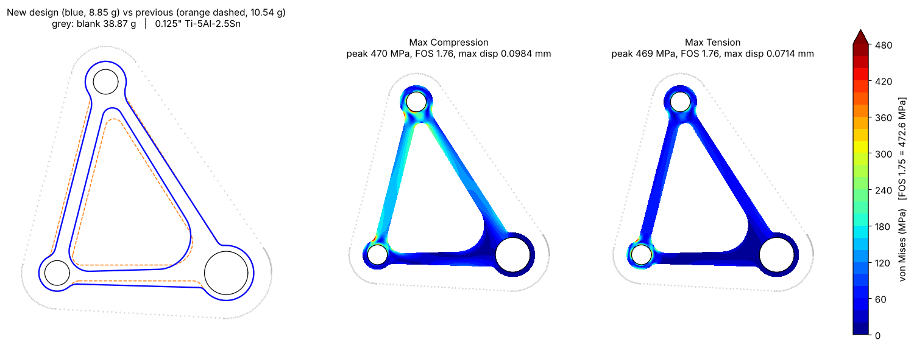

Terps Racing · Formula SAE · 2026
Minimum-Mass Titanium Bell Crank
Designed a suspension bell crank for a Terps Racing mass-reduction challenge. Took it from a 38.87 g blank to 8.85 g in 0.125 in titanium while meeting every strength, stiffness and buckling requirement.
- final mass
- 8.85g
- lighter than blank
- 77%
- min. factor of safety
- 1.76
- Material
- Ti-5Al-2.5Sn, 0.125 in
- Process
- Waterjet cut
- Tools
- SolidWorks Simulation, Python
- Sheet
- 1 of 4
Final results
| Study | FOS | Max deflection |
|---|---|---|
| Max compression | 1.76 | 0.098 mm |
| Max tension | 1.76 | 0.071 mm |
| Buckling | 1.78 | – |
| Required | ≥ 1.75 | ≤ 0.100 mm |
Mass by iteration

Requirements
| Factor of safety | ≥ 1.75 in compression, tension and buckling |
|---|---|
| Max deflection | ≤ 0.1 mm |
| Stock | 0.125 in Ti-5Al-2.5Sn, waterjet cut |
| Min. feature | 0.75 mm |
| Ring around holes | ≥ 1.5 mm (my own rule, to protect the bores) |
Outcome
Widening the search from constant-width legs to tapered, offset legs with individual fillets cut a further 16%, from 10.54 g to 8.85 g. Compression stress, tension stress, buckling and deflection now all sit at their limits at the same time, so this shape can’t get lighter without breaking a requirement.
Approach
- Set up the studiesThree SolidWorks Simulation studies (max compression, max tension, buckling) with the pivot fixed and a 0.225 mm mesh control at the hot spots.
- Parameterized the shapeA triangular frame with 18 variables: width at each end of every leg, leg offsets, boss radii, pocket-corner radii and individual fillets.
- Optimized for massAn AI-assisted Python optimization with a plane-stress FEA model that checked stress, deflection and buckling at every step.
- Removed mesh noiseTiny geometry changes were causing 0.5–1.5% jumps in peak stress. A 0.12 mm mesh on fillets and pocket corners fixed it.
- Compared layoutsA braced, topology-style frame was heavier than a plain triangle at the same safety factor, so the triangle was kept.
- Verified independentlyCross-checked with a 3D quadratic-tetrahedral model (buckling FOS 1.80 vs. 1.78), then confirmed the final geometry in SolidWorks.
Manufacturing check. Margins are thin: deflection is 1.6% under its limit and FOS is 0.6% over. A 0.1 mm waterjet over-cut would take about 4% off the thinnest leg, so I recommended toolpath compensation or adding 0.1 mm to each leg, which costs about 0.2 g.
Skills applied
- SolidWorks Simulation
- FEA
- Buckling analysis
- Design optimization
- Python
- Design for manufacturing